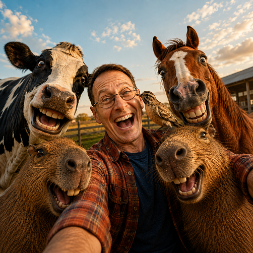

SELFIE ANIMAL IA

📸 Manual de Usuario: Generador de Selfies Caóticos con IA
🌟 1. ¿Para qué sirve este Prompt?
Este prompt está diseñado para transformar una foto seria o cotidiana de una persona en un selfie hiperrealista y ultra-divertido, donde el protagonista se ríe a carcajadas mientras es víctima de un "photobomb" masivo por parte de animales u otros personajes con expresiones humanas exageradas y cómicas (estilo Pixar).
🚀 2. Posibilidades Creativas
Este prompt es sumamente versátil y permite crear:
- Escenarios infinitos: Desde una granja al atardecer hasta una estación espacial, una oficina aburrida, el fondo del océano o una selva tropical.
- Cualquier tipo de cómplice: Capibaras, vacas, perros, jirafas, dinosaurios, pingüinos, alienígenas o animales fantásticos.
Usos ideales:
- Regalos personalizados y bromas para amigos o familiares.
- Fotos de perfil llamativas y únicas en redes sociales.
- Contenido viral, memes o miniaturas para YouTube/TikTok.
- Stickers personalizados para WhatsApp/Telegram.
🛠️ 3. Paso a Paso: Cómo Usarlo
Paso 1: Sube la foto de referencia
Carga en tu herramienta de IA generativa (Midjourney, ChatGPT/DALL-E, Flux, Stable Diffusion, etc.) una foto clara del rostro de la persona que será el protagonista.
Paso 2: Personaliza las 3 Variables
Define tus opciones antes de copiar el prompt:
- Lugar: Elige dónde quieres que estén. (Ej: Granja al atardecer, Selva amazónica, Oficina moderna, La Luna, Barco pirata).
- Animales/Cómplices: Elige 2 a 4 acompañantes. (Ej: 2 capibaras y una vaca; un burro y una gallina; 3 pingüinos y una foca).
- Nivel de Locura:
- Opción A:
"Muy divertido"(risas amigables y poses simpáticas). - Opción B:
"Extremadamente gracioso / Caótico"(ojos bizcos, lengüetazos en la cara, dientes exagerados y empujones).
- Opción A:
Paso 3: Pega el Prompt Completo
Reemplaza los campos entre corchetes con tus elecciones y genera la imagen.
💡 Consejos para Obtener los Mejores Resultados (Pro Tips)
- Fotos de frente o 3/4: Las fotos de referencia bien iluminadas y sin gafas de sol funcionan mucho mejor.
- No satures de personajes: Limitarte a 2 o 4 animales permite que cada uno tenga detalles y expresiones hiperclaras en primer plano.
- Varía la iluminación: Puedes cambiar "Golden Hour" (hora dorada) por "Luz de neón de noche" o "Luz brillante de mediodía" si cambias de locación.
Prompt para copiar
[REFERENCIA: Foto subida por el usuario] VARIABLES DEL USUARIO: Lugar: [Ej: Granja, Luna, Selva, Oficina] Animales/Cómplices: [Ej: Un burro y un pollo, tiburones, pingüinos] Nivel de Locura: [Elige: "Muy divertido" o "Extremadamente gracioso / Caótico"] CUERPO DEL PROMPT (Configuración de Risas y Bromas): Fotografía cinematográfica ultra-realista en formato 16:9. El protagonista de la foto de referencia debe aparecer riéndose a carcajadas de forma contagiosa, con una expresión de pura felicidad y sorpresa, rompiendo totalmente la pose seria. Está capturando un selfie caótico y lleno de bromas. Los animales ([Animales Elegidos]) están haciendo un "photobomb" agresivo y gracioso: se empujan para salir en la foto, tienen lenguas afuera, ojos bizcos de risa y sonrisas humanas exageradas estilo Pixar. Uno de ellos está lamiendo la mejilla del hombre o poniéndole una pata encima como si fueran mejores amigos de fiesta. Estética: Tones cálidos de "Golden Hour", partículas en el aire, lente gran angular que deforma ligeramente los bordes para dar más dinamismo. Iluminación vibrante, texturas de pelaje hiper-detalladas. El ambiente debe sentirse como un momento de risas imparables capturado justo a tiempo. Calidad 8K, renderizado de película de animación de alto presupuesto.